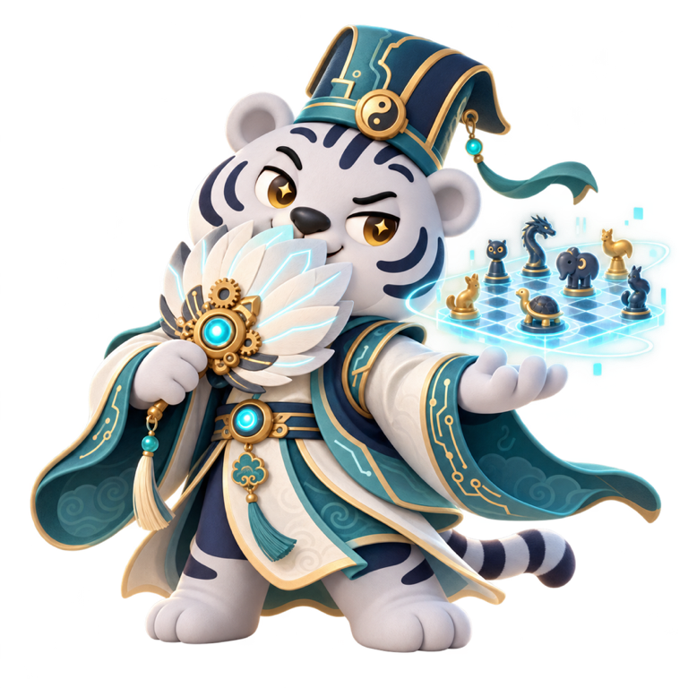
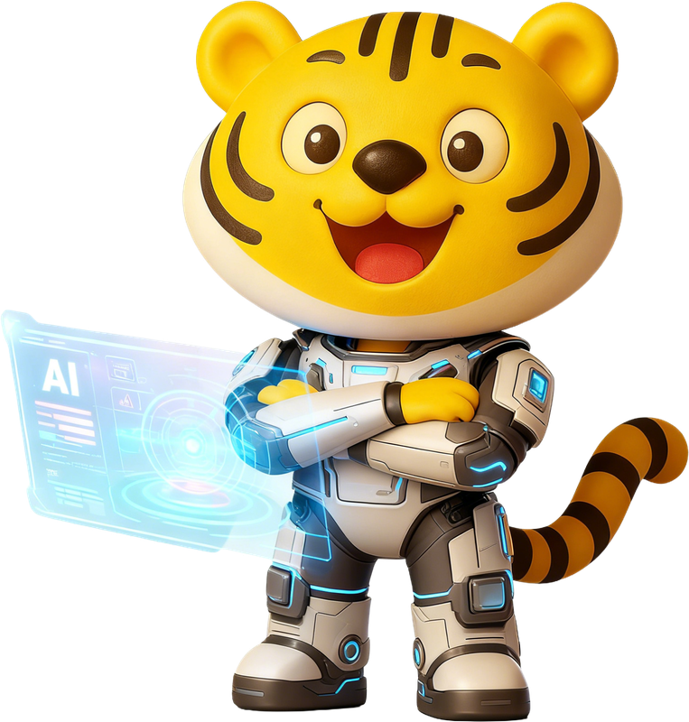

方片 AI 人格圖鑑02 / 16
Prompt法师
「一句咒语就能让AI开始加班的那只虎」
“不是AI不行，可能只是咒语还没念对。”
16種人格，沒有高低
面對新工具，你會先試試還是先觀察？AI 說得很肯定，你會直接用還是再查一遍？16 個選擇，遇見和 AI 一起成長的自己。
AITI = AI Tiger Type Indicator，方片的 AI 小老虎人格測試。

「一句咒语就能让AI开始加班的那只虎」
“不是AI不行，可能只是咒语还没念对。”
方片正在從 MCN 向科技方向轉型。無論你在哪個崗位，都可以從適合自己的起點開始，把 AI 用進真實工作。
剛開始接觸 AI 的每一位同事
先認識 AI 能做什麼、哪些結果需要核驗，再學會把需求說清楚。用一個日常小任務，邁出擁抱 AI 的第一步。
從 AI 能做什麼開始內容、營運、設計、商務與職能崗位
把 AI 用進選題、文案、資料整理和方案分析。練習提供背景、持續迭代與檢查結果，讓一次好回答變成可複用的方法。
從工作中的好提問開始研發、產品與希望動手搭建工具的同事

從模型介面進入工具呼叫、Agent 與評測。把業務需求拆成可驗證的小工具，與業務同事一起推進原型、試用和交付。
從模型介面與對話開始角色按當前學習目標選擇，不綁定崗位；隨時可以切換，學習進度會保留。 瀏覽完整課程
主綫按順序學，專題按興趣選。